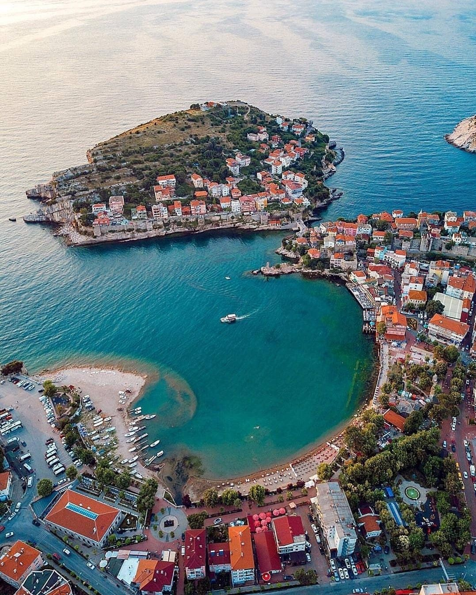
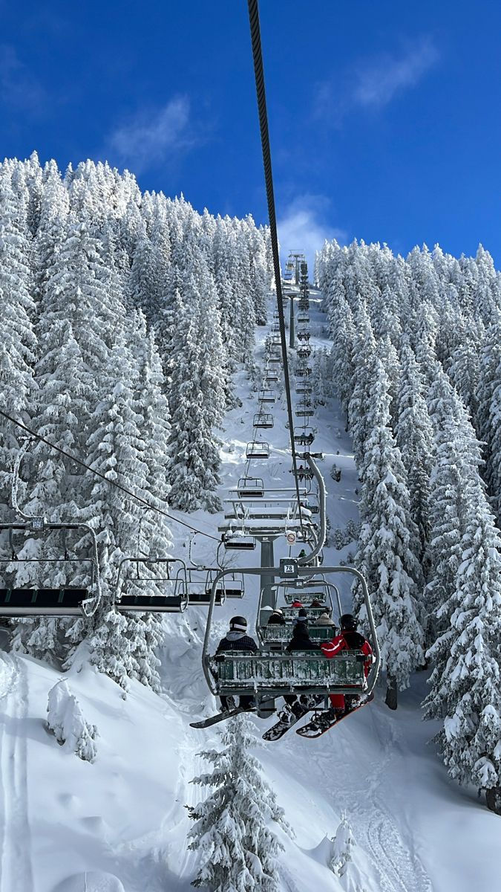
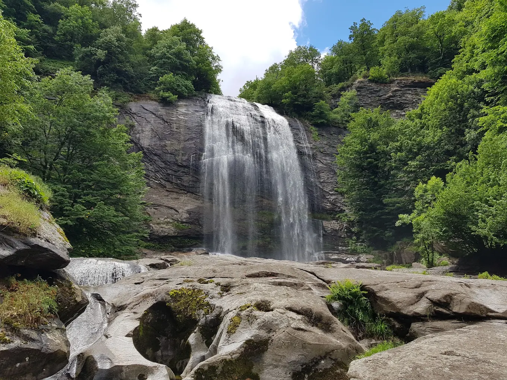
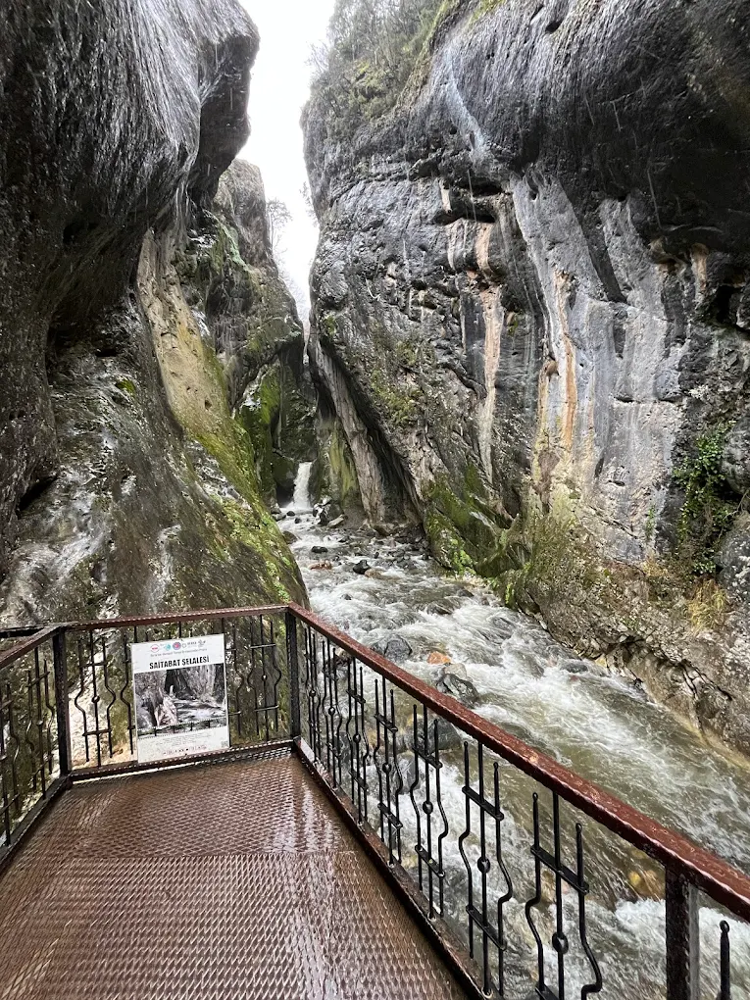
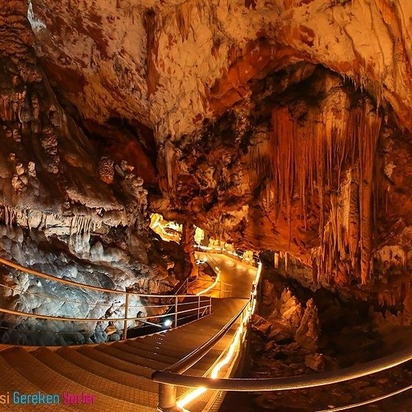
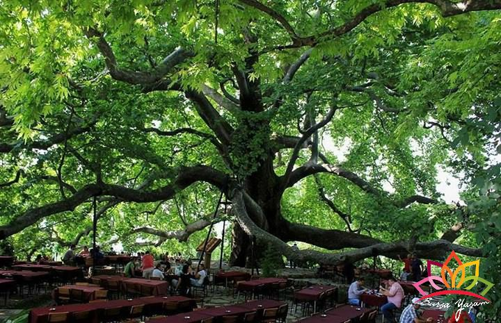
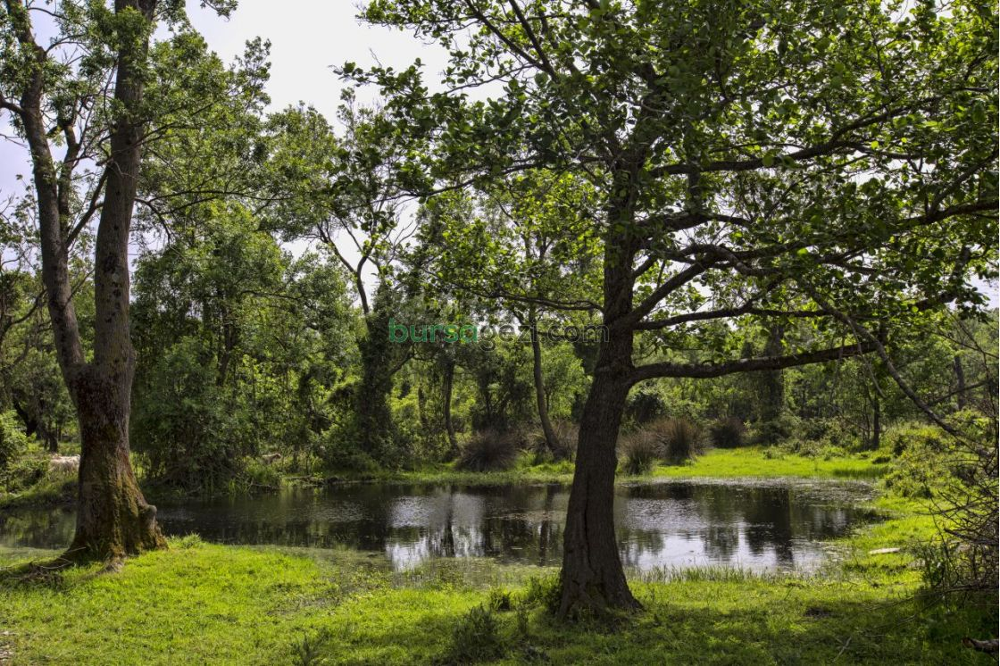
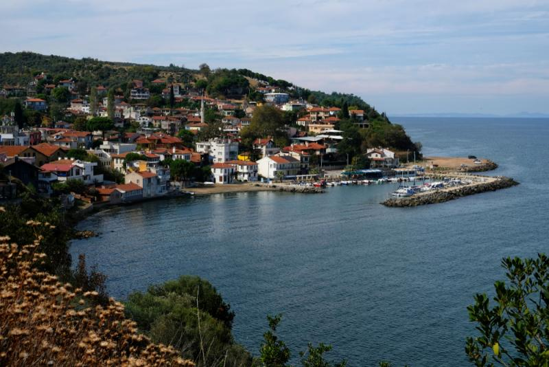

Gölyazı (Apolyont)
Uluabat Gölü üzerinde, gün batımıyla ünlü balıkçı kasabası.
Osmanlı'nın Başkenti · Yeşil Şehir · Tarihin Kalbi
Uludağ’dan göllere, şelalelerden mağaralara Bursa’nın “Yeşil Şehir” sıfatını haklı çıkaran doğa harikaları aşağıda madde madde özetlenmiştir.

Kışın kayak, yazın trekking ve endemik bitki gözlemi için Türkiye’nin önde gelen dağ destinasyonlarından biri.

Uluabat Gölü üzerinde, gün batımıyla ünlü balıkçı kasabası.

Mustafakemalpaşa’da yer alan, 38 metreden dökülen doğa harikası.

Dere kenarında kahvaltı ve doğa yürüyüşü noktası.

Türkiye’nin en büyük mağaralarından biri ve şifalı suları.

600 yılı devirmiş, devasa gölgesiyle ünlü anıt ağaç.

Nadir bulunan subasar orman ekosistemi.

Mudanya’nın tarihi Rum evleri ve deniziyle ünlü sahil kasabası.